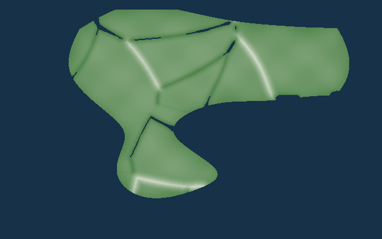

Geo
World Generator
Phase 2.5 Lab
返回世界总览
Phase 2.5 · 长期气候与降水骨架
Temperature → Wind / Current → Moisture → Precipitation
当前只看温度骨架。
还没有加入洋流、季风、降水或实时天气。海洋格子的温度按海平面处理，不会因为海底很深而被错误降温。
① 纬度
北 → 赤道 → 南
② 纯纬度温度
还没有海拔修正
③ 陆地有效海拔
海洋按 0m 处理

④ 年平均温度
纬度 + 陆地海拔
⑤ 理想化气压带
赤道低压 / 副热带高压 / 副极地低压 / 极地高压
⑥ 盛行风
信风 / 西风带 / 极地东风
⑦ 海表温度 SST
纬度基准 + 洋流热量输送
⑧ 表层洋流
风驱 + Coriolis + 海岸阻挡
⑨ 洋流温度修正
红=增温 · 蓝=降温
⑩ 修正后年平均温度
纬度 + 海拔 + 洋流沿海影响
⑪ 大气水汽
海洋蒸发 + 盛行风输送 + 弱陆地再循环
⑫ 地形抬升
迎风坡上升凝结潜力
⑬ 年降水
水汽 + 低压抬升 + 地形雨 / 雨影